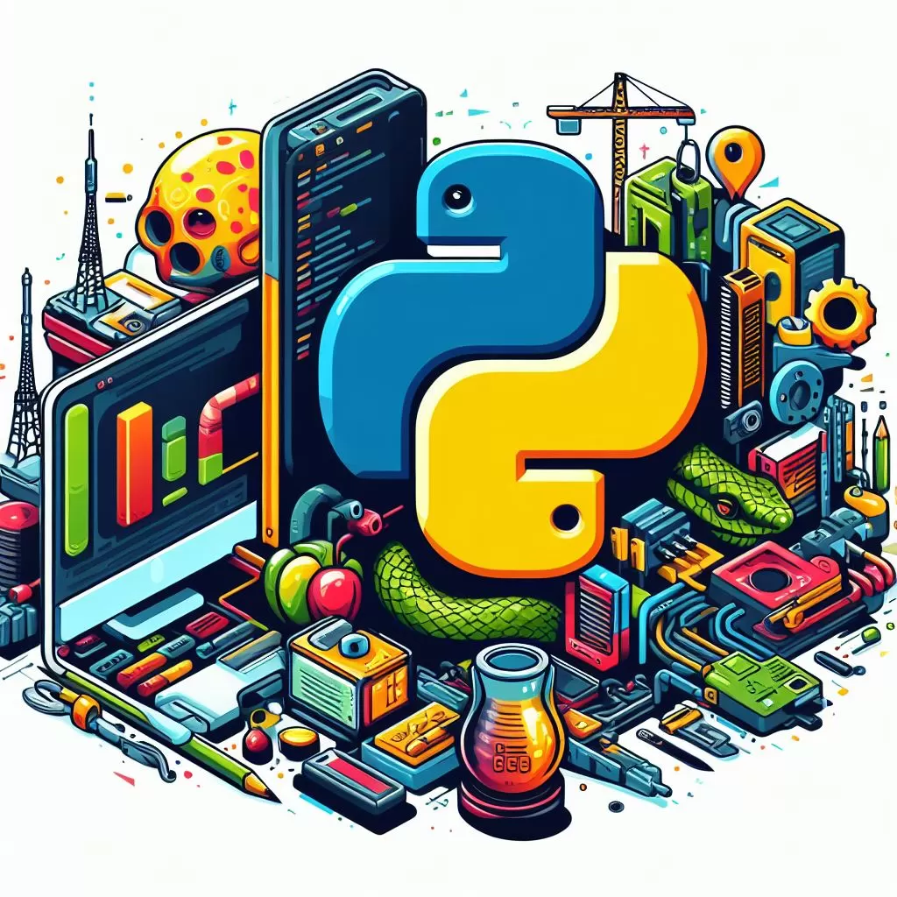

O que é Python?
O Python é uma linguagem de programação amplamente usada em aplicações da Web, desenvolvimento de software, ciência de dados e machine learning (ML). Os desenvolvedores usam o Python porque é eficiente e fácil de aprender e pode ser executada em muitas plataformas diferentes. O software Python pode ser baixado gratuitamente, integra-se bem a todos os tipos de sistema e agiliza o desenvolvimento.
Qual é a história do Python?
Guido Van Rossum, um programador de computador na Holanda, criou o Python. Ele começou em 1989 no Centrum Wiskunde & Informatica (CWI), inicialmente como um projeto de hobby para se manter ocupado durante o Natal. O nome da linguagem foi inspirado no programa de TV da BBC “Monty Python’s Flying Circus”, porque Guido Van Rossum era um grande fã do programa.
Quais são os benefícios do Python?
Os benefícios do Python incluem: Os desenvolvedores podem ler e entender facilmente um programa Python, porque tem uma sintaxe básica semelhante à do inglês.
- O Python tem uma grande biblioteca-padrão que contém códigos reutilizáveis para quase todas as tarefas. Como resultado, os desenvolvedores não precisam escrever códigos do zero.
- O Python aumenta a produtividade dos desenvolvedores, porque eles podem escrever um programa Python usando menos linhas de código em comparação a muitas outras linguagens.
- A comunidade ativa do Python inclui milhões de desenvolvedores de suporte em todo o mundo. Se você tiver algum problema, poderá obter suporte rápido da comunidade.
Salários de Desenvolvedor Python
O salários do cargo de Desenvolvedor Python no Brasil ganha em média 3mil-6mil reais.